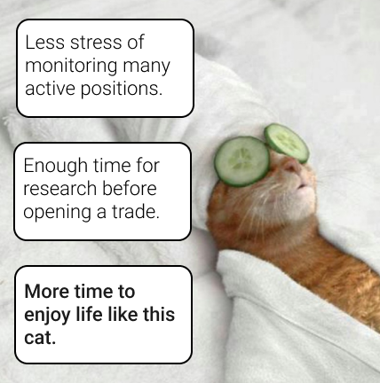

And its observable in trading as well.
Have you tried reading 20 books 📚 at once?
It’s feasible, but studies suggest it's rarely effective:
When our brain is constantly bouncing back and forth between complex tasks that require our attention(like trading many assets 🙄) we become less efficient and more likely to make a mistake.
*Mater Sociomed. 2017 Dec; 29(4): 251–256.
*Our algorithms confirmed that the highest average returns are by traders who trade no more than 4.3 assets simultaneously.
Likely not, yet that's what pro traders use when trading more than 6-8 different assets. For beginners this oftens leads to “overtrading”😰
A mistake many make by trying to profit from everything - jumping from asset to asset to catch every possible move, or worse, try to win back previous losses.
To better understand price trends of the assets you wish to trade, you must conduct thorough research on them.
For this reason even at Warren Buffet's Berkshire Hathaway (Valued $612 Billion), each pro analyst holds just 7 active trades.
The golden strategy this app is built upon, is the 5 asset rule.
Pick 5 different assets and trade only those for a certain period of time. Avoid greediness to trade more, instead carefully research and investigate the ones you’ve chosen.
💡This will give you:
Work in agriculture? - you will understand wheat and other commodities.
Are you an IT expert? - Crypto and tech stocks is your niche
Study political science? - Forex is a game of economics + politics.
Italian economist Vilfredo Pareto is renowned for using mathematics to analyze the economy.
In 1906 he discovered the 80/20 distribution, which can be seen in many aspects of life.
And its observable in trading as well.
Price changes in the 20 largest stocks in the Nasdaq 100 index, account for 80% of the index's price fluctuations.📈
This app offers the top 120+ assets in the world, which account for roughly 80% of all trading volume worldwide.
You'll be comfortable trading all of them once you've gained some expertise, but your main focus should always be no more than 5 assets you trade or invest in regularly. These will be the ones you know and understand best and who produce 80% of your profits.